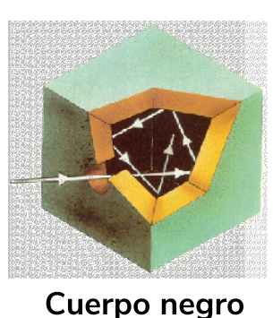

La radiación térmica es la radiación electromagnética ( de cualquier parte del espectro) que surge debido a la temperatura del cuerpo.
{kind=link}

De NASA/IPAC , Dominio público, Enlace
En realidad cualquier cuerpo emite radiación a cualquier temperatura, lo que ocurre es que sólo somos capaces de observar los cambios de color que ocurren dentro del rango del espectro visible.
Para poder estudiar la radiación en cualquier cuerpo y a cualquier temperatura se parte de un modelo ideal que denominamos CUERPO NEGRO.
Las características del cuerpo negro son:
- Absorbe toda la radiación que incide sobre él por lo que no refleja nada.
- Emite siempre la máxima cantidad de radiación a cualquier temperatura.

Una cavidad parecida a la figura es una buena aproximación de cuerpo negro. Al entrar la radiación por el orificio sufre varias reflexiones y sus paredes absorbentes hacen posible que la radiación quede dentro. De igual manera al calentarlo por el orificio sale toda la radiación que puede emitir.
LEY DE WIEN
Si representamos la intensidad de la onda que emite un cuerpo en función de la su longitud de onda y para varias temperaturas obtenemos una gráfica como la de la figura.

De Wikipedia, CC BY-SA 4.0, Enlace
Observamos que para cada temperatura hay un máximo distinto, esto de conoce como Ley de Wien.
$\boxed{\lambda = \frac{cte}{T}}$ donde $cte=2,8976K\cdot m$
Esta ley era válida hasta que se entraba en el rango de la radiación ultravioleta por lo que a este problema se le llamó catástrofe ultravioleta. Se le daría solución gracias a Planck.
RADIACIÓN TÉRMICA DE MAX PLANCK(1900).
- La energía de esta radiación no es continua sino que se emite en pequeños paquete denominados cuantos, como si fueran partículas.
- La energía de un "cuanto" depende de la frecuencia a la que vibran los átomos del material. $\boxed{E=h\cdot f}$ donde $h=6,63\cdot 10^{-34} J\cdot s$ es la constante de Planck.
- La energía está cuantizada, es decir, sólo se pueden emitir un número entero de cuantos de energía por lo que la energía total de cualquier cuerpo es: $\boxed{E=n_T \cdot h\cdot f}$
Puedes observar una simulación de este efecto desde la página del PHET.